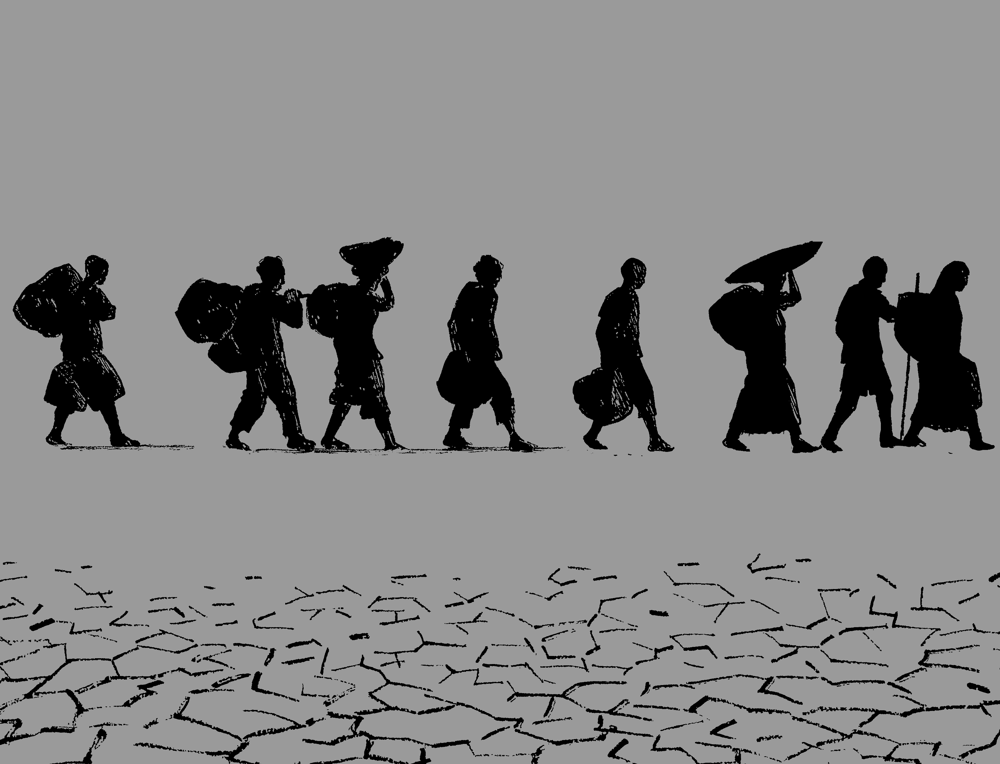

2018년 제주 난민 사태
제주 난민 사태를 말하자면
2016년과 2018년 사이에 예멘 출신 난민 500여 명이 제주도에 입국해 대한민국 정부에 난민 지위 인정을 요청한 사건을 말한다. 대한민국에 입국하기 위해서는 많은 개발도상국 국민들에게 비자가 필요하지만 예외적으로 제주도는 관광객 유치를 위해서 거의 모든 나라 사람들이 별다른 조건 없이 30일간 무비자 체류가 가능해 예민 난민들은 이 제도를 이용해 제주도에 합법적으로 입국할 수 있었다. 예멘이 이슬람 강세 국가인 만큼 이번 난민 거의 전원이 무슬림이다.
한국이 이전에 난민이 유입되지 않았다거나 난민을 받지 않은 것은 아니지만, 이 사건이 특수한 이유는 한국에서 '통제되지 않고 문화적으로 유사성이 낮은 난민이 가장 짧은 시간 내에 대규모 유입'한 사건이기 때문이다. 그리고 거의 전원이 무슬림인 탓에 한국에서도 유럽 난민 사태와 엮여 한국에서 본격적인 반이슬람, 반난민 여론을 일으켰다.
어떻게 제주로 들어오게 됐나?
예멘을 떠난 난민들은 ①예멘→수단 ②예멘→사우디아라비아 ③예멘→지부티 등 크게 3가지의 이동 경로를 택한다.
하지만 이후 말레이시아→제주의 경로를 택한다. 말레이시아는 예멘인에게 비자없이 90일간 체류할 수 있는 곳이다. 같은 이슬람 국가라서 그렇다고 했다. 이들은 말레이시아를 중간 기착지로 삼아, 무비자입국이 가능한 제주를 최종 목적지로 삼는 것이다.
예멘에서 수단과 사우디아라비아까지 가는 데 약 300달러, 다시 말레이시아까지 이동하는 데 비용이 350~400달러, 말레이시아에서 제주까지는 약 300달러가 든다고 했다. 예멘에서 제주까지 900달러(한화로 약 100만원)정도면 된다는 이야기다.
예멘인들은 대부분 스마트폰으로 비행기 티켓을 조회해 비행기로 이동했다. 이들은 이미 제주도에 오기 전부터 페이스북과 왓츠앱, 카카오톡, 텔레그램 등을 통해 각종 정보를 얻어왔고 한다. 한 예멘인은 "제주의 무사증 제도와 난민 신청 방법들을 페이스북 그룹을 통해 배웠다"며 "항공권 구입처와 숙소 추천까지도 있다"고 했다.
위 기사에서 예멘 난민들은 난민 전문 브로커가 개입하는 경우도 있지만 스마트폰으로도 충분한 정보를 습득할 수 있다고 주장한다. 제주에 들어온 예멘 난민들은 "우리 난민을 두고 '브로커가 있다', '가짜난민이다' 등 한국인 사이에서 분위기가 좋지 않은 것을 알고 있다"며 "페이스북과 왓츠앱 등 SNS가 우리에게는 브로커다. 솔직히 브로커를 쓸 만큼 돈이 없다"고 했다.
출입국외국인정책본부의 조치
결국 출입국외국인정책본부는 2018년 6월 1일부터 예멘을 무비자 국가에서 제외했고, 제주도 내 예멘 난민들에 대해서는 제주도를 벗어나지 못하게 하는 제한 조치도 실시했다. 현실적으로 부족한 예산과 인프라 그리고 난민에 호의적이지 않는 사회에서는 감당할 수 없다고 판단한 것이다.
한편 제주도청과 출입국외국인청에서는 난민신청자들에 대해서 인도적인 지원과 관리를 하는 한편 추가 입국을 불허했다. 제주도청도 예멘 난민에 대해서는 인도적인 지원을 하면서 도민 안전에 최선을 다하겠다고 밝혔다. 제주도내 예멘 난민들은 제주도에 체류하면서 동시에 양식장, 어선 선원으로 조기 취업하는 등 이미 402명의 취업도 준비가 된 상태라고 출입국청이 밝혔다. 원희룡 제주지사는 문재인 대통령에게 예멘 난민심사를 최대한 신속하게 진행해줄 것을 건의했다.
국가인권위원회는 제주에서 난민 신청을 한 예멘인들의 인권 실태 파악 조사에 나섰다. 인권위는 제주에서 난민신청을 했다는 이유로 거주지 이동을 제한한 것은 문제가 될 수 있다고 지적하고 난민 신청 예멘인들이 거주와 의료 등에서 겪는 인권침해 여부를 집중 조사할 예정이라고 밝혔다.